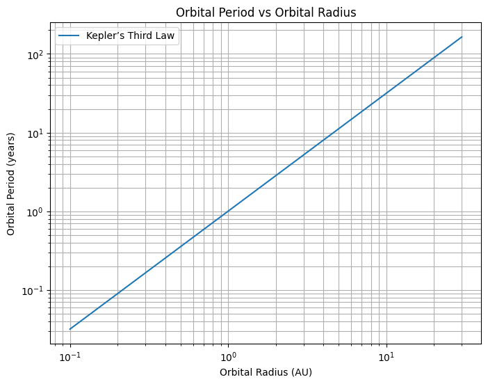
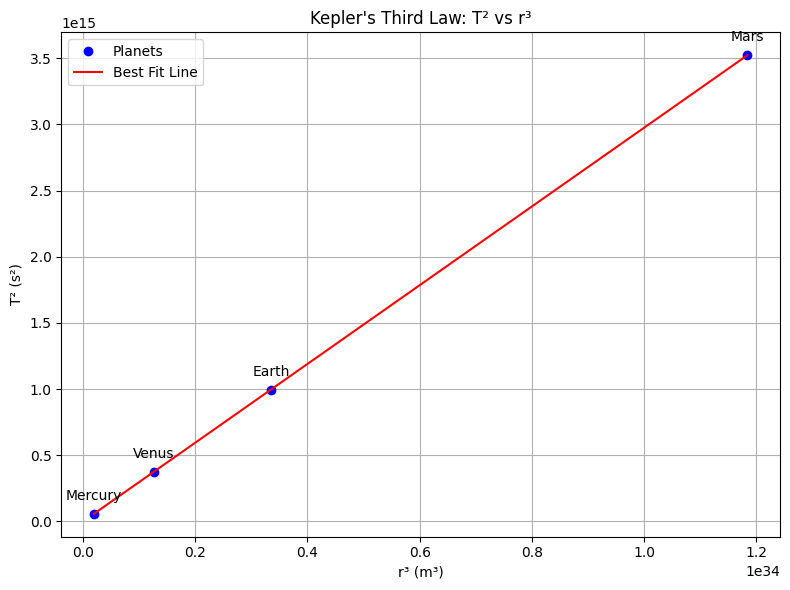
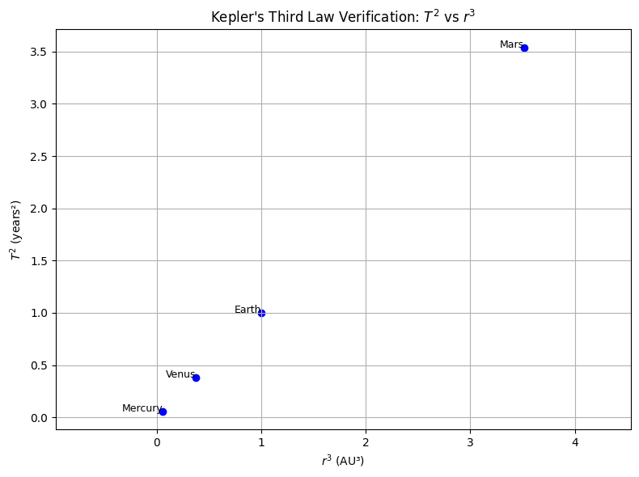

Great! Here's a structured outline and starting content for your Markdown document with Python code and explanations to address Problem 1: Orbital Period and Orbital Radius.
Gravity: Orbital Period and Orbital Radius
Motivation
Kepler’s Third Law reveals that the square of a planet’s orbital period is proportional to the cube of the semi-major axis (or radius for circular orbits) of its orbit. Mathematically:
This relationship bridges the laws of motion and gravitation and allows us to calculate orbital parameters for celestial bodies, aiding everything from GPS satellite operations to interplanetary missions.
Derivation of the Relationship
Consider a small mass \(m\) orbiting a large mass \(M\) in a circular orbit of radius \(r\). The gravitational force provides the necessary centripetal force:
Cancel \(m\) and solve for orbital speed \(v\):
The period \(T\) is the time to complete one orbit:
Squaring both sides:
Thus:
Implications in Astronomy
- Calculate planetary masses: Rearranging the law gives \(M = \frac{4\pi^2 r^3}{G T^2}\), allowing us to estimate a star's or planet’s mass.
- Estimate distances in space: If you know the period, you can deduce the orbital radius—and vice versa.
- Apply to moons, satellites, and exoplanets: Kepler’s Law holds for any object under central gravitational force.
🌍 Real-World Examples
1. The Moon orbiting Earth
- \(r \approx 3.84 \times 10^8\) m
- \(T \approx 27.3\) days \(= 2.36 \times 10^6\) seconds
Using \(T^2 = \frac{4\pi^2 r^3}{GM}\), this checks out with the known mass of Earth \((5.97 \times 10^{24} \text{kg})\).
2. Planets in the Solar System
Plotting \(\log(T^2)\) vs \(\log(r^3)\) gives a straight line—evidence of Kepler’s Law.
Computational Simulation (Python)
import numpy as np
import matplotlib.pyplot as plt
# Constants
G = 6.67430e-11 # m^3 kg^-1 s^-2
M = 1.989e30 # kg (mass of the Sun)
# Orbital radii from 0.1 AU to 30 AU
radii = np.linspace(0.1, 30, 100) * 1.496e11 # in meters
# Calculate orbital periods using Kepler's third law
T = 2 * np.pi * np.sqrt(radii**3 / (G * M))
# Convert radius to AU and period to years for easier interpretation
radii_AU = radii / 1.496e11
T_years = T / (60 * 60 * 24 * 365.25)
# Plot
plt.figure(figsize=(8,6))
plt.loglog(radii_AU, T_years, label='Kepler’s Third Law')
plt.xlabel('Orbital Radius (AU)')
plt.ylabel('Orbital Period (years)')
plt.title('Orbital Period vs Orbital Radius')
plt.grid(True, which='both')
plt.legend()
plt.show()

Elliptical Orbits and Generalization
For elliptical orbits, Kepler's Third Law still holds using the semi-major axis \(a\) instead of the radius:
This insight extends to:
- Binary star systems
- Exoplanets
- Artificial satellites
Summary
- The square of the orbital period is proportional to the cube of the orbital radius: \(T^2 \propto r^3\)
- This relationship is derived from Newton's law of gravitation and centripetal force
- It enables mass and distance calculations across astronomy
- The simulation confirms the law numerically and visually
import matplotlib.pyplot as plt
import numpy as np
# Planetary data
planets = {
'Mercury': {'T': 87.97 * 24 * 3600, 'r': 57.91e9},
'Venus': {'T': 224.7 * 24 * 3600, 'r': 108.21e9},
'Earth': {'T': 365.25 * 24 * 3600, 'r': 149.60e9},
'Mars': {'T': 687 * 24 * 3600, 'r': 227.92e9}
}
# Prepare data
T2 = []
r3 = []
labels = []
for planet, data in planets.items():
T = data['T']
r = data['r']
T2.append(T**2)
r3.append(r**3)
labels.append(planet)
# Linear regression (fit a line: T² = slope * r³ + intercept)
slope, intercept = np.polyfit(r3, T2, 1)
fit_line = np.poly1d([slope, intercept])
# Generate x-values for the fit line
r3_fit = np.linspace(min(r3), max(r3), 500)
T2_fit = fit_line(r3_fit)
# Plot points and the fit line
plt.figure(figsize=(8, 6))
plt.plot(r3, T2, 'o', color='blue', label='Planets')
plt.plot(r3_fit, T2_fit, '-', color='red', label='Best Fit Line')
for i, label in enumerate(labels):
plt.annotate(label, (r3[i], T2[i]), textcoords="offset points", xytext=(0,10), ha='center')
plt.xlabel('r³ (m³)')
plt.ylabel('T² (s²)')
plt.title("Kepler's Third Law: T² vs r³")
plt.grid(True)
plt.legend()
plt.tight_layout()
plt.show()
# Optional: print slope to verify Kepler constant
print(f"Slope (T²/r³) ≈ {slope:.3e} s²/m³")

import matplotlib.pyplot as plt
# Planet data
planets = ['Mercury', 'Venus', 'Earth', 'Mars']
T = [0.241, 0.615, 1.0, 1.881] # Orbital periods (years)
r = [0.39, 0.72, 1.0, 1.52] # Distances from Sun (AU)
# Calculate T^2 and r^3
T_squared = [t**2 for t in T]
r_cubed = [radius**3 for radius in r]
# Create the plot
plt.figure(figsize=(8,6))
plt.scatter(r_cubed, T_squared, color='blue')
# Annotate each point with the planet name
for i in range(len(planets)):
plt.text(r_cubed[i], T_squared[i], planets[i], fontsize=9, ha='right')
plt.title("Kepler's Third Law Verification: $T^2$ vs $r^3$")
plt.xlabel("$r^3$ (AU³)")
plt.ylabel("$T^2$ (years²)")
plt.grid(True)
plt.axis('equal') # Equal scaling of axes
plt.tight_layout()
plt.show()

To use Kepler's Third Law to find the mass of Earth and the Sun, we need to apply the law in its gravitational form, which relates the orbital period and distance of an orbiting body to the mass of the central body. The formula is:
𝑇 2 = 4 𝜋 2 𝐺 𝑀 𝑎 3 T 2 = GM 4π 2
a 3
Where:
𝑇 T is the orbital period (in seconds), 𝑎 a is the semi-major axis of the orbit (in meters), 𝐺 G is the gravitational constant ( 6.67430 × 1 0 − 11 m 3 kg − 1 s − 2 6.67430×10 −11 m 3 kg −1 s −2 ), 𝑀 M is the mass of the central body (in kilograms). We can rearrange this to solve for the mass 𝑀 M:
𝑀
4 𝜋 2 𝑎 3 𝐺 𝑇 2 M= GT 2
4π 2 a 3
Let’s calculate the masses step-by-step.
- Mass of the Sun To find the mass of the Sun, we use Earth’s orbit around the Sun as the reference. Earth orbits the Sun, so the Sun is the central body.
Semi-major axis ( 𝑎 a): The average distance from Earth to the Sun is approximately 1 astronomical unit (AU), which is 1.496 × 1 0 11 m 1.496×10 11 m. Orbital period ( 𝑇 T): Earth’s orbital period is 1 year, which is approximately 365.25 days × 86 , 400 s/day = 31 , 557 , 600 s 365.25days×86,400s/day=31,557,600s. Gravitational constant ( 𝐺 G): 6.67430 × 1 0 − 11 m 3 kg − 1 s − 2 6.67430×10 −11 m 3 kg −1 s −2 . Plugging in the values:
𝑀 Sun = 4 𝜋 2 ( 1.496 × 1 0 11 ) 3 6.67430 × 1 0 − 11 ⋅ ( 31 , 557 , 600 ) 2 M Sun = 6.67430×10 −11 ⋅(31,557,600) 2
4π 2 (1.496×10 11 ) 3
First, compute the components:
𝑎 3 = ( 1.496 × 1 0 11 ) 3 = 3.347 × 1 0 33 m 3 a 3 =(1.496×10 11 ) 3 =3.347×10 33 m 3 , 𝑇 2 = ( 31 , 557 , 600 ) 2 = 9.966 × 1 0 15 s 2 T 2 =(31,557,600) 2 =9.966×10 15 s 2 , 4 𝜋 2 ≈ 39.478 4π 2 ≈39.478, 𝐺 = 6.67430 × 1 0 − 11 G=6.67430×10 −11 . Numerator:
4 𝜋 2 𝑎 3 = 39.478 ⋅ 3.347 × 1 0 33 ≈ 1.322 × 1 0 35 4π 2 a 3 =39.478⋅3.347×10 33 ≈1.322×10 35
Denominator:
𝐺 𝑇 2 = 6.67430 × 1 0 − 11 ⋅ 9.966 × 1 0 15 ≈ 6.652 × 1 0 5 GT 2 =6.67430×10 −11 ⋅9.966×10 15 ≈6.652×10 5
So:
𝑀 Sun = 1.322 × 1 0 35 6.652 × 1 0 5 ≈ 1.989 × 1 0 30 kg M Sun = 6.652×10 5
1.322×10 35
≈1.989×10 30 kg Mass of the Sun: 1.989 × 1 0 30 kg 1.989×10 30 kg.
- Mass of the Earth To find the mass of Earth, we use the Moon’s orbit around Earth, as Earth is the central body for the Moon.
Semi-major axis ( 𝑎 a): The average distance from Earth to the Moon is approximately 3.844 × 1 0 8 m 3.844×10 8 m. Orbital period ( 𝑇 T): The Moon’s orbital period (sidereal month) is approximately 27.322 days, which is 27.322 × 86 , 400 = 2 , 360 , 620 s 27.322×86,400=2,360,620s. Gravitational constant ( 𝐺 G): 6.67430 × 1 0 − 11 m 3 kg − 1 s − 2 6.67430×10 −11 m 3 kg −1 s −2 . Plugging in the values:
𝑀 Earth = 4 𝜋 2 ( 3.844 × 1 0 8 ) 3 6.67430 × 1 0 − 11 ⋅ ( 2 , 360 , 620 ) 2 M Earth = 6.67430×10 −11 ⋅(2,360,620) 2
4π 2 (3.844×10 8 ) 3
First, compute the components:
𝑎 3 = ( 3.844 × 1 0 8 ) 3 = 5.677 × 1 0 25 m 3 a 3 =(3.844×10 8 ) 3 =5.677×10 25 m 3 , 𝑇 2 = ( 2 , 360 , 620 ) 2 = 5.573 × 1 0 12 s 2 T 2 =(2,360,620) 2 =5.573×10 12 s 2 , 4 𝜋 2 ≈ 39.478 4π 2 ≈39.478. Numerator:
4 𝜋 2 𝑎 3 = 39.478 ⋅ 5.677 × 1 0 25 ≈ 2.241 × 1 0 27 4π 2 a 3 =39.478⋅5.677×10 25 ≈2.241×10 27
Denominator:
𝐺 𝑇 2 = 6.67430 × 1 0 − 11 ⋅ 5.573 × 1 0 12 ≈ 3.720 × 1 0 2 GT 2 =6.67430×10 −11 ⋅5.573×10 12 ≈3.720×10 2
So:
𝑀 Earth = 2.241 × 1 0 27 3.720 × 1 0 2 ≈ 6.024 × 1 0 24 kg M Earth = 3.720×10 2
2.241×10 27
≈6.024×10 24 kg Mass of the Earth: 6.024 × 1 0 24 kg 6.024×10 24 kg.
Final Answer Mass of the Earth: 6.024 × 1 0 24 kg 6.024×10 24 kg Mass of the Sun: 1.989 × 1 0 30 kg 1.989×10 30 kg